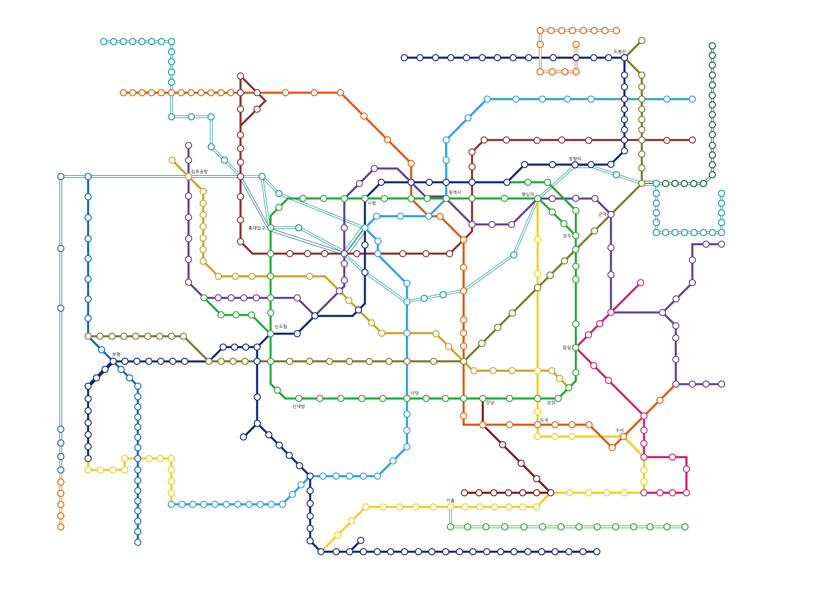

대중교통 알리미
버스
지하철
길 찾기 안내
환경 설정
버스
정류장 검색
노선 번호 검색
노선 번호
버스 정류장 검색
주변 정류장 찾기
1km 반경, 20개 이내
정류소 ID 검색
잠시만 기다려주세요.
정류소 목록
More Options
지하철
지하철 도착 정보
전체 노선도 보기
경로 찾기
지하철 정류장 검색
주변 정류장 찾기
10개 이내
직접 찾기
정류장 목록
노선 번호
1호선
2호선
3호선
4호선
5호선
6호선
7호선
8호선
9호선
분당선
신분당선
인천1호선
공항철도
경의중앙선
경춘선
수인선
용인에버라인
의정부전철
우이신설경전철
More Options

지하철 길 찾기
출발
설정
도착
설정